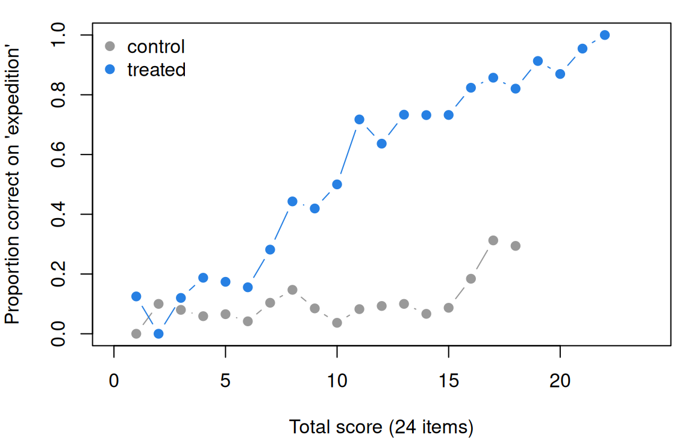

Differential item functioning
What this is for
Two groups of children take a vocabulary test, and one group scores higher. Is the test fair to both? A difference in scores is not, by itself, evidence of unfairness: the groups may differ in vocabulary. What we can check is narrower and more useful. Take children from the two groups who do equally well on the test as a whole: do they find each item equally hard? An item on which they don’t shows differential item functioning (DIF). Fairness in testing separated impact from bias; this lesson finds bias item by item. It builds the two standard methods, Mantel–Haenszel and logistic regression, takes on the question of what to match on, and applies all of it to a first-grade vocabulary test from a randomized trial, grouping the children seven demographic ways and then one more.
Goals
By the end of this lesson you should be able to:
- say why a raw gap between groups mixes impact with DIF, and what matching does about it;
- define uniform and non-uniform DIF with item characteristic curves, and say why DIF is always relative to the other items;
- choose a matching variable, say what purifying it does, and say what robust scaling does instead;
- run the Mantel–Haenszel procedure and classify items with the ETS A/B/C categories;
- fit the three nested logistic-regression models for uniform and non-uniform DIF, and report an effect size;
- read DIF by treatment in a randomized trial as item-to-item variation in the treatment effect.
Core ideas
DIF: the same item, at the same level of the construct
An item shows DIF if respondents with the same \(\theta\) but in different groups have different chances of answering it correctly (Lord, 1980, “Study of item bias”; AERA, APA & NCME, 2014, p. 51). Give each group its own curve. If they differ only in \(b\), one group finds the item harder at every \(\theta\): uniform DIF. If they differ in \(a\), the curves cross and the item favours one group at low \(\theta\) and the other at high: non-uniform DIF. The group we are asking about is the focal group; the comparison is the reference group.
Try it: impact and DIF
Two groups of 1,000 answer ten Rasch items. The sliders set the focal group’s mean ability (impact) and make item 5 alone harder for it (DIF). Top: raw gaps in proportion correct. Bottom: the Mantel–Haenszel delta (below), which compares the groups at the same total score.
With impact and no DIF, every raw gap is negative and the matched deltas sit near zero. Add DIF and only item 5’s delta moves; among the raw gaps it is one negative bar among ten.
Nobody observes \(\theta\), so what goes on the x-axis? A score from the test itself: the total, the rest score (the total without the studied item), or \(\theta\) estimated from the other items. The items in the matching score are the anchor. Two things follow. First, DIF is relative to the anchor: if every item were harder for the focal group by the same amount, the matched comparison would find nothing, since a shift common to all items looks like impact. Second, DIF items contaminate the anchor. If some items are harder for the focal group, its total understates its \(\theta\), and clean items drift toward favouring it. The usual remedy is purification: drop the flagged items from the matching score and run the analysis again (Holland & Thayer, 1986; Candell & Drasgow, 1988). In simulations it helps when DIF runs mostly one way, and can cost a little when DIF is balanced (Clauser, Mazor & Hambleton, 1993; Zwick, 2012, pp. 16–22).
Impact adds a subtler problem: with no DIF at all, if the reference group’s \(\theta\) dominates, reference respondents at a given total still sit a little higher on \(\theta\), and matching can show spurious DIF in both directions (Zwick, 1990). The total matches exactly only when it is sufficient for \(\theta\) (Go deeper, below).
Try it: what to match on
Twenty items, 1,000 respondents per group. Set the number and size of DIF items and the impact; match on the total or a purified total.
Add DIF items and the blue (clean) dots rise together: on a contaminated total, clean items look easier for the focal group. Purify and they come back toward zero.
The Mantel–Haenszel procedure and the ETS categories
At each total score \(k\), cross group with right and wrong on the studied item. Write \(A_k, B_k\) for the reference group’s right and wrong answers, \(C_k, D_k\) for the focal group’s, and \(n_k\) for everyone at that score. The common odds ratio \[\hat\alpha_{MH} = \frac{\sum_k A_k D_k / n_k}{\sum_k B_k C_k / n_k}\] pools the tables (Mantel & Haenszel, 1959); a chi-square tests whether it is 1. Holland and Thayer (1986) brought it to DIF, reported on ETS’s scale of item difficulty, \[\Delta_{MH} = -2.35 \ln \hat\alpha_{MH},\] negative when the item is harder for the focal group. ETS sorts items into three categories (Zwick, 2012, pp. 3–4):
- A (negligible): the chi-square is not significant at .05, or \(|\Delta_{MH}| < 1\);
- C (moderate to large): \(|\Delta_{MH}| \ge 1.5\) and significantly greater than 1;
- B (slight to moderate): everything else.
Needing only a matching score and counts, it is a reasonable first choice for uniform DIF in large samples. A relative standardizes the difference in proportions correct across score levels (Dorans & Kulick, 1986).
With many items and large samples, something is nearly always significant. The categories add a size criterion, and at ETS it is the C items that go to review committees (Zwick, 2012, p. 11). A flag is a fact about an item in a sample. The Standards ask for a substantial explanation before an item is called biased (AERA, APA & NCME, 2014, p. 51), and it comes from the item’s content, not the statistic. (If you’ve done From construct map to items: the number flags the item; the text decides.)
Logistic regression DIF
The most straightforward DIF analysis is that same logistic regression, one item at a time, with the matching score as the predictor (Swaminathan & Rogers, 1990). Fit three nested models for item \(i\): \[\begin{aligned} M_0:&\quad \text{logit} \Pr(x_{ij} = 1) = \beta_0 + \beta_1 r_j,\\ M_1:&\quad \text{logit} \Pr(x_{ij} = 1) = \beta_0 + \beta_1 r_j + \beta_2 g_j,\\ M_2:&\quad \text{logit} \Pr(x_{ij} = 1) = \beta_0 + \beta_1 r_j + \beta_2 g_j + \beta_3 g_j r_j, \end{aligned}\] with \(r_j\) the matching score and \(g_j = 1\) for the focal group. \(M_1\) adds uniform DIF: \(\beta_2\) is where the action is, the difference in log odds between groups at the same score. \(M_2\) adds non-uniform DIF: \(\beta_3\) lets the slope on the score differ by group. Likelihood-ratio tests compare the models in turn, or \(M_0\) with \(M_2\) for both kinds at once.
How big is the DIF? \(e^{\beta_2}\) is an odds ratio at a fixed score, like \(\hat\alpha_{MH}\), so \(2.35\,\beta_2\) sits on the delta scale. Or take the change in Nagelkerke’s pseudo-\(R^2\) from \(M_0\) to \(M_2\); Jodoin and Gierl (2001) proposed categories for it, which difR implements as negligible below 0.035, moderate from 0.035 to 0.07 and large above (Magis, Béland, Tuerlinckx & De Boeck, 2010).
Why the workhorse? It is a model we already know, fitted with glm(); it tests non-uniform DIF, which Mantel–Haenszel pools away; it takes continuous matching variables and extra covariates; and it extends to ordered categories as a cumulative logit model (problem 3; Crane, Gibbons, Jolley & van Belle, 2006). Comparing item parameters estimated in each group is a third family (Lord, 1980, “Study of item bias”; Thissen, Steinberg & Wainer, 1993).
Try it: uniform and non-uniform DIF
The studied item has \(b = 0\) and \(a = 1\) in the reference group; the sliders set its focal-group curve. Fifteen other items complete the matching score; 2,000 respondents per group, no impact.
With the slope at 1, the delta and 2.35 times the group coefficient move together. Now set the difficulty to 0 and the slope to 2: the curves cross, the delta stays near 0, and the slopes on the total part company. Mantel–Haenszel pools over scores and can miss DIF that changes sign; the interaction term sees it.
Treatment as a grouping variable
In a randomized trial, treatment assignment is a grouping too: among children with the same total, is an item easier for treated children? It is if the program raises some items much more than others. DIF by treatment is variation in the treatment effect from item to item (Gilbert, Kim & Miratrix, 2023; Ahmed et al., 2025). It says what the effect on the total is made of.
Simulate
The code below simulates 20 2PL items for two groups, the focal group 1 SD lower on \(\theta\) and items 9 and 10 harder for it by 0.6 logits, and runs Mantel–Haenszel on every item in 100 replications, matching on the total and on a purified total. It is base R and takes a few seconds.
With the seed as written, the DIF items’ mean delta is −1.3 (true values −1.3 and −1.4), significant in 99% of replications. On the contaminated total the clean items drift upward (mean delta 0.13) and are significant 8.7% of the time, against a nominal 5%; purified, 7.4%. Set slopes_vary <- FALSE and the purified rate falls to 3.6%. Try n_dif <- 6 (33% false flags on the total), and n_dif <- 0 with impact <- 2.
Download this code to run it in your own R session.
With real data
Our table is gilbert_meta_11: a vocabulary test from a cluster-randomized trial of a content literacy program, in which treated schools taught thematic science and social studies lessons (Kim, Relyea, Burkhauser, Scherer & Rich, 2021; data at doi:10.7910/DVN/HQEMN6), in the trial collection of Gilbert, Himmelsbach, Soland, Joshi & Domingue (2025). Its job is to be a test we can split many ways: it records gender, race and ethnicity, English-learner status, an individualized education program (IEP), low income and treatment. The trial enrolled first and second graders; the IRW and the item text mark this table as the grade 1 form (grade 2 is the trial in What is measurement?), which I could not check against the paper’s full text. Each item asks a child to circle the two of four words that go with a target word; 1 is correct, so higher means more vocabulary. There is one outcome occasion. Download the code; it needs only base R, except the last chunk (mirt and robustDIF).
Code
# The IRW table, from the CSV link on its landing page (pinned to one version).
url <- "https://redivis.com/api/v1/tables/datapages.item_response_warehouse:v59_0.gilbert_meta_11/rows?format=csv"
long <- read.csv(url)
head(long[, c("id", "item", "resp", "treat", "cov_male", "cov_lep")], 3)| id | item | resp | treat | cov_male | cov_lep |
|---|---|---|---|---|---|
| 77 | sci3 | 1 | 0 | 0 | 0 |
| 77 | sci8 | 0 | 0 | 0 | 0 |
| 77 | sci10 | 1 | 0 | 0 | 0 |
Code
# One row per child: the 24 items (12 science, 12 social studies; 1 = correct) and
# the child's covariates. We keep the children who answered all 24 items.
items <- c(paste0("sci", 1:12), paste0("ss", 1:12))
w <- reshape(long[, c("id", "item", "resp")], idvar = "id", timevar = "item", direction = "wide")
names(w) <- sub("^resp\\.", "", names(w))
kids <- long[!duplicated(long$id), c("id", "treat", grep("^cov_", names(long), value = TRUE))]
w <- merge(w, kids, by = "id")
c(children = nrow(w), complete = sum(complete.cases(w[, items])))children complete
2588 2347 Code
w <- w[complete.cases(w[, items]), ]
X <- as.matrix(w[, items])We keep the 2,347 of 2,588 children who answered all 24 items. For race and ethnicity the reference group is White children (76 children with none of the four indicators are left out).
Code
# Each grouping is a focal group (coded 1) against a reference group (coded 0);
# children in neither are left out (NA). A positive delta favours the focal group.
race <- function(g) ifelse(w[[g]] == 1, 1, ifelse(w$cov_white == 1, 0, NA))
groups <- list(
"girls vs. boys" = 1 - w$cov_male,
"Black vs. White" = race("cov_black"),
"Hispanic vs. White" = race("cov_hispanic"),
"Asian vs. White" = race("cov_asian"),
"English learners vs. not" = w$cov_lep,
"IEP vs. not" = w$cov_iep,
"low income vs. not" = w$cov_ses_low,
"treated vs. control" = w$treat)
t(sapply(groups, function(g) c(focal = sum(g == 1, na.rm = TRUE), reference = sum(g == 0, na.rm = TRUE)))) focal reference
girls vs. boys 1138 1209
Black vs. White 868 448
Hispanic vs. White 761 448
Asian vs. White 194 448
English learners vs. not 533 1814
IEP vs. not 188 2159
low income vs. not 941 1406
treated vs. control 1286 1061Code
# The Mantel-Haenszel procedure for one item. Children are matched on a score (by
# default the total on all 24 items, the studied item included); within each score
# level k we have a 2 x 2 table of group by right/wrong. The common odds ratio pools
# the tables; delta = -2.35 ln(alpha) puts it on the ETS delta scale (Holland &
# Thayer, 1986). SE: Robins, Breslow & Greenland (1986). Chi-square: with the
# continuity correction, as ETS computes it (Zwick, 2012, eq. 3).
mh <- function(y, g, score) {
ok <- !is.na(g)
y <- y[ok]; g <- g[ok]; s <- score[ok]
A <- tapply(y == 1 & g == 0, s, sum) # reference, right
B <- tapply(y == 0 & g == 0, s, sum) # reference, wrong
C <- tapply(y == 1 & g == 1, s, sum) # focal, right
D <- tapply(y == 0 & g == 1, s, sum) # focal, wrong
n <- A + B + C + D
keep <- n > 1
A <- A[keep]; B <- B[keep]; C <- C[keep]; D <- D[keep]; n <- n[keep]
R <- A * D / n; S <- B * C / n
alpha <- sum(R) / sum(S)
P <- (A + D) / n; Q <- (B + C) / n
var_log <- sum(P * R) / (2 * sum(R)^2) + sum(P * S + Q * R) / (2 * sum(R) * sum(S)) +
sum(Q * S) / (2 * sum(S)^2)
nR <- A + B; nF <- C + D; m1 <- A + C; m0 <- B + D
chisq <- max(0, abs(sum(A) - sum(nR * m1 / n)) - 0.5)^2 / sum(nR * nF * m1 * m0 / (n^2 * (n - 1)))
c(delta = -2.35 * log(alpha), se = 2.35 * sqrt(var_log), chisq = chisq,
p = pchisq(chisq, 1, lower.tail = FALSE))
}
# The ETS categories (Zwick, 2012, pp. 3-4). A: not significant at .05, or |delta| < 1.
# C: |delta| >= 1.5 and |delta| significantly greater than 1. B: everything else.
ets <- function(delta, se, p) {
ifelse(p >= 0.05 | abs(delta) < 1, "A",
ifelse(abs(delta) >= 1.5 & (abs(delta) - 1) / se > qnorm(0.95), "C", "B"))
}
mh_all <- function(g, score = rowSums(X), cols = items) {
out <- as.data.frame(t(sapply(cols, function(i) mh(X[, i], g, score))))
out$ets <- ets(out$delta, out$se, out$p)
out
}
summarise_mh <- function(r) c(significant = sum(r$p < 0.05), A = sum(r$ets == "A"),
B = sum(r$ets == "B"), C = sum(r$ets == "C"),
largest = round(max(abs(r$delta)), 2))What does no DIF look like? Split the children at random twenty times.
Code
# The sanity check: random halves of the same children. Nothing but chance can make
# an item "work differently" for them, so these counts are the baseline.
set.seed(44)
rand <- t(replicate(20, summarise_mh(mh_all(rbinom(nrow(X), 1, 0.5)))))
round(colMeans(rand), 2)significant A B C largest
0.80 24.00 0.00 0.00 0.52 Code
max(rand[, "largest"])[1] 0.66On random halves, 0.80 items in 24 are significant on average, none is ever in B or C, and the largest \(|\Delta|\) is 0.66. That is the baseline.
Code
res <- lapply(groups, mh_all)
abc <- t(sapply(res, summarise_mh))
abc significant A B C largest
girls vs. boys 5 24 0 0 0.81
Black vs. White 6 20 4 0 1.32
Hispanic vs. White 8 18 5 1 1.72
Asian vs. White 1 23 1 0 1.07
English learners vs. not 7 20 4 0 1.21
IEP vs. not 4 21 3 0 1.23
low income vs. not 11 22 2 0 1.31
treated vs. control 15 17 1 6 5.74Code
# The same numbers from the difR package (Magis et al., 2010), if installed: its
# difMH matches on the total score and reports alpha; delta = -2.35 ln(alpha).
if (requireNamespace("difR", quietly = TRUE)) {
d <- difR::difMH(Data = X, group = w$treat, focal.name = 1)
max(abs(-2.35 * log(d$alphaMH) - res[["treated vs. control"]]$delta))
}[1] 0(Our function and difR agree to rounding error.)
Take the demographic groupings first. Girls and boys: 5 items significant, all in A, largest \(|\Delta|\) 0.81, near the random baseline. The other comparisons each put 1 to 5 items in B, and one item reaches C: sci12, at 1.72, easier for Hispanic than for White children with the same total.
Code
# The B items among the demographic groupings, with the proportion correct in each group.
dem <- do.call(rbind, lapply(names(groups)[1:7], function(nm) {
r <- res[[nm]]; g <- groups[[nm]]
b <- rownames(r)[r$ets != "A"]
if (!length(b)) return(NULL)
data.frame(grouping = nm, item = b, delta = round(r[b, "delta"], 2),
p_focal = round(colMeans(X[g %in% 1, b, drop = FALSE]), 2),
p_reference = round(colMeans(X[g %in% 0, b, drop = FALSE]), 2))
}))
rownames(dem) <- NULL
dem| grouping | item | delta | p_focal | p_reference |
|---|---|---|---|---|
| Black vs. White | sci5 | -1.10 | 0.62 | 0.83 |
| Black vs. White | sci7 | 1.31 | 0.43 | 0.41 |
| Black vs. White | sci10 | -1.15 | 0.51 | 0.75 |
| Black vs. White | ss2 | 1.32 | 0.37 | 0.38 |
| Hispanic vs. White | sci6 | -1.27 | 0.68 | 0.88 |
| Hispanic vs. White | sci7 | 1.20 | 0.40 | 0.41 |
| Hispanic vs. White | sci10 | -1.19 | 0.49 | 0.75 |
| Hispanic vs. White | sci12 | 1.72 | 0.36 | 0.35 |
| Hispanic vs. White | ss2 | 1.47 | 0.32 | 0.38 |
| Hispanic vs. White | ss8 | -1.13 | 0.57 | 0.83 |
| Asian vs. White | ss1 | -1.07 | 0.51 | 0.64 |
| English learners vs. not | sci7 | 1.02 | 0.43 | 0.40 |
| English learners vs. not | sci12 | 1.05 | 0.34 | 0.34 |
| English learners vs. not | ss8 | -1.21 | 0.50 | 0.72 |
| English learners vs. not | ss9 | -1.13 | 0.59 | 0.78 |
| IEP vs. not | sci4 | 1.01 | 0.21 | 0.28 |
| IEP vs. not | sci11 | 1.23 | 0.18 | 0.16 |
| IEP vs. not | ss11 | -1.06 | 0.41 | 0.67 |
| low income vs. not | ss2 | 1.31 | 0.37 | 0.35 |
| low income vs. not | ss8 | -1.08 | 0.55 | 0.75 |
Some items recur (sci5, sci10 and ss8 harder, sci7, sci12 and ss2 easier for several focal groups). These are facts about items in this sample, not verdicts on the groups, and they are modest next to what comes next.
The twist: DIF by treatment
Code
# Items by their treatment DIF. Each item asks the child to pick the two of four
# words that go with a target word; a few target words, from the IRW item text
# (reconstructed from the study's materials), label the items discussed in the text.
words <- c(ss2 = "expedition", ss7 = "indigenous", ss6 = "obstacle",
sci5 = "behavior", ss8 = "celebrate", sci10 = "habitat", ss11 = "community")
tr <- res[["treated vs. control"]]
tr$p_control <- colMeans(X[w$treat == 0, ])
tr$p_treated <- colMeans(X[w$treat == 1, ])
tr$word <- ifelse(rownames(tr) %in% names(words), words[rownames(tr)], "")
tr <- tr[order(-tr$delta), ]
print(data.frame(word = tr$word, delta = round(tr$delta, 2), se = round(tr$se, 2),
ets = tr$ets, p_control = round(tr$p_control, 2),
p_treated = round(tr$p_treated, 2), row.names = rownames(tr))) word delta se ets p_control p_treated
ss2 expedition 5.74 0.29 C 0.09 0.58
ss7 indigenous 1.83 0.23 C 0.38 0.62
ss6 obstacle 1.75 0.24 C 0.46 0.68
ss12 0.78 0.25 A 0.20 0.32
sci9 0.77 0.28 A 0.14 0.26
sci11 0.76 0.30 A 0.12 0.19
ss5 0.22 0.24 A 0.22 0.30
sci7 0.16 0.21 A 0.37 0.44
sci3 0.14 0.29 A 0.77 0.82
sci8 -0.08 0.30 A 0.13 0.17
sci12 -0.10 0.23 A 0.31 0.37
ss3 -0.23 0.27 A 0.20 0.26
ss4 -0.28 0.23 A 0.52 0.59
sci1 -0.33 0.22 A 0.38 0.41
ss10 -0.42 0.26 A 0.22 0.27
sci2 -0.56 0.23 A 0.42 0.45
sci4 -0.68 0.25 A 0.25 0.29
ss1 -0.77 0.22 A 0.50 0.51
sci6 -0.87 0.27 A 0.75 0.75
ss9 -0.95 0.27 A 0.73 0.74
ss11 community -1.49 0.24 B 0.67 0.62
sci10 habitat -1.81 0.25 C 0.58 0.54
ss8 celebrate -1.87 0.28 C 0.68 0.66
sci5 behavior -1.93 0.26 C 0.70 0.65Code
# The raw treatment difference in the total score is the sum of the items'
# differences in proportion correct. How much of it is expedition's?
gap <- tr$p_treated - tr$p_control
round(c(total_gap = sum(gap), expedition = gap[rownames(tr) == "ss2"],
share = gap[rownames(tr) == "ss2"] / sum(gap)), 2) total_gap expedition share
1.70 0.48 0.28 Treatment puts six items in C. The largest by far is ss2, whose target word is expedition (from the IRW item text): 9% of control and 58% of treated children answered it correctly, a delta of 5.74, and this one item is 28% of the raw treatment difference in the total (0.48 of 1.70 items). Indigenous and obstacle follow. Three C items have negative deltas (behavior, celebrate, habitat): they barely moved while the total rose.
Code
# Expedition, matched: the proportion correct by total score, in each arm.
tot <- rowSums(X)
band <- cut(tot, c(-1, 8, 12, 16, 20, 24), labels = c("0-8", "9-12", "13-16", "17-20", "21-24"))
round(tapply(X[, "ss2"], list(total = band, arm = ifelse(w$treat == 1, "treated", "control")), mean), 2) arm
total control treated
0-8 0.08 0.23
9-12 0.07 0.57
13-16 0.11 0.75
17-20 0.27 0.87
21-24 1.00 0.98Code
op <- par(mar = c(4, 4, 1, 1))
pc <- tapply(X[, "ss2"], list(tot, w$treat), mean)
nn <- table(tot, w$treat)
pc[nn < 10] <- NA # hide score levels with fewer than 10 children in an arm
plot(as.numeric(rownames(pc)), pc[, "0"], type = "b", pch = 19, col = "#999", ylim = c(0, 1),
xlab = "Total score (24 items)", ylab = "Proportion correct on 'expedition'")
lines(as.numeric(rownames(pc)), pc[, "1"], type = "b", pch = 19, col = "#2780e3")
legend("topleft", c("control", "treated"), col = c("#999", "#2780e3"), pch = 19, bty = "n")
Code
par(op)Matched, the gap for expedition holds at every band of totals below 21: among children with 13 to 16 correct, 75% of treated and 11% of control children got it. Now logistic regression, for every item and grouping.
Code
# Logistic regression DIF (Swaminathan & Rogers, 1990): three nested models per item,
# M0: total score; M1: + group (uniform DIF); M2: + group x total (non-uniform DIF).
# Likelihood-ratio tests compare them. The effect size is the change in Nagelkerke's
# R^2 from M0 to M2, classified as Jodoin & Gierl (2001) do in difR: below .035
# negligible (A), .035 to .07 moderate (B), above .07 large (C).
nagelkerke <- function(m, ll0, n) {
cs <- 1 - exp(2 * (ll0 - as.numeric(logLik(m))) / n)
cs / (1 - exp(2 * ll0 / n))
}
lr_item <- function(y, g, total) {
d <- data.frame(y = y, g = g, total = total)[!is.na(g), ]
ll0 <- as.numeric(logLik(glm(y ~ 1, binomial, d)))
m0 <- glm(y ~ total, binomial, d)
m1 <- glm(y ~ total + g, binomial, d)
m2 <- glm(y ~ total * g, binomial, d)
c(beta_group = unname(coef(m1)["g"]),
p_uniform = anova(m0, m1, test = "LRT")[2, "Pr(>Chi)"],
p_nonuniform = anova(m1, m2, test = "LRT")[2, "Pr(>Chi)"],
p_both = anova(m0, m2, test = "LRT")[2, "Pr(>Chi)"],
dR2 = nagelkerke(m2, ll0, nrow(d)) - nagelkerke(m0, ll0, nrow(d)))
}
lr_all <- function(g) {
out <- as.data.frame(t(sapply(items, function(i) lr_item(X[, i], g, rowSums(X)))))
out$jg <- ifelse(out$p_both >= 0.05 | out$dR2 < 0.035, "A", ifelse(out$dR2 < 0.07, "B", "C"))
out
}
lr <- lapply(groups, lr_all)
# Side by side with Mantel-Haenszel: items significant (2-df test), and the Jodoin &
# Gierl categories.
t(sapply(lr, function(r) c(significant = sum(r$p_both < 0.05), A = sum(r$jg == "A"),
B = sum(r$jg == "B"), C = sum(r$jg == "C"),
largest_dR2 = round(max(r$dR2), 3)))) significant A B C largest_dR2
girls vs. boys 4 24 0 0 0.008
Black vs. White 9 24 0 0 0.017
Hispanic vs. White 12 24 0 0 0.025
Asian vs. White 4 24 0 0 0.023
English learners vs. not 9 24 0 0 0.010
IEP vs. not 6 24 0 0 0.007
low income vs. not 9 24 0 0 0.014
treated vs. control 17 23 0 1 0.244Code
# Treatment, item by item: the group coefficient (a log odds ratio at a fixed total;
# 2.35 times it is on the MH delta scale), the non-uniform test, and the effect size.
lt <- lr[["treated vs. control"]]
lt <- data.frame(word = tr[rownames(lt), "word"], beta_group = round(lt$beta_group, 2),
odds_ratio = round(exp(lt$beta_group), 2),
lr_delta = round(2.35 * lt$beta_group, 2),
mh_delta = round(tr[rownames(lt), "delta"], 2),
p_nonuniform = signif(lt$p_nonuniform, 2), dR2 = round(lt$dR2, 3),
jg = lt$jg, mh_ets = tr[rownames(lt), "ets"], row.names = rownames(lt))
lt[order(-lt$dR2), ][1:8, ]| word | beta_group | odds_ratio | lr_delta | mh_delta | p_nonuniform | dR2 | jg | mh_ets | |
|---|---|---|---|---|---|---|---|---|---|
| ss2 | expedition | 2.57 | 13.08 | 6.04 | 5.74 | 3.0e-07 | 0.244 | C | C |
| sci5 | behavior | -0.85 | 0.43 | -2.01 | -1.93 | 1.2e-02 | 0.031 | A | C |
| ss7 | indigenous | 0.78 | 2.18 | 1.83 | 1.83 | 1.5e-02 | 0.030 | A | C |
| ss11 | community | -0.65 | 0.52 | -1.53 | -1.49 | 1.2e-04 | 0.029 | A | B |
| ss6 | obstacle | 0.74 | 2.10 | 1.74 | 1.75 | 5.2e-04 | 0.026 | A | C |
| sci10 | habitat | -0.77 | 0.46 | -1.80 | -1.81 | 2.6e-01 | 0.025 | A | C |
| ss8 | celebrate | -0.76 | 0.47 | -1.79 | -1.87 | 4.8e-03 | 0.021 | A | C |
| sci11 | 0.35 | 1.41 | 0.81 | 0.76 | 3.9e-05 | 0.017 | A | A |
Code
round(cor(lt$lr_delta, lt$mh_delta), 4)[1] 0.9991Code
sum(lr[["treated vs. control"]]$p_nonuniform < 0.05)[1] 14The two methods agree on the size of uniform DIF: 2.35 times the group coefficient tracks the Mantel–Haenszel delta item for item (correlation 0.9991), and for expedition the odds ratio at a fixed total is 13.08. They sort items differently. By the Jodoin–Gierl categories every demographic item is negligible, and so is every treatment item except expedition (\(\Delta R^2\) = 0.244); the other five ETS C items have \(\Delta R^2\) between 0.021 and 0.031. The interaction is significant at .05 for 14 of the 24 items: with 2,347 children, small differences in slope are significant too, which is why sizes, not p-values, should decide what gets reviewed.
Last, the relativity of DIF. The total contains expedition and the other C items, so for the remaining items it overstates treated children’s vocabulary. Purify:
Code
# Purification: drop the C items from the matching score (each studied item stays
# in its own score), then run the procedure again (Holland & Thayer, 1986).
flag <- rownames(res[["treated vs. control"]])[res[["treated vs. control"]]$ets == "C"]
flag[1] "sci5" "sci10" "ss2" "ss6" "ss7" "ss8" Code
pur <- as.data.frame(t(sapply(items, function(i) {
anchor <- union(setdiff(items, flag), i)
mh(X[, i], w$treat, rowSums(X[, anchor]))
})))
pur$ets <- ets(pur$delta, pur$se, pur$p)
cmp <- data.frame(total = round(res[["treated vs. control"]]$delta, 2),
purified = round(pur$delta, 2),
ets_total = res[["treated vs. control"]]$ets, ets_purified = pur$ets,
row.names = items)
cmp[order(-cmp$total), ]| total | purified | ets_total | ets_purified | |
|---|---|---|---|---|
| ss2 | 5.74 | 5.77 | C | C |
| ss7 | 1.83 | 2.03 | C | C |
| ss6 | 1.75 | 1.97 | C | C |
| ss12 | 0.78 | 1.05 | A | B |
| sci9 | 0.77 | 1.18 | A | B |
| sci11 | 0.76 | 0.82 | A | A |
| ss5 | 0.22 | 0.44 | A | A |
| sci7 | 0.16 | 0.22 | A | A |
| sci3 | 0.14 | 0.35 | A | A |
| sci8 | -0.08 | 0.09 | A | A |
| sci12 | -0.10 | 0.09 | A | A |
| ss3 | -0.23 | 0.15 | A | A |
| ss4 | -0.28 | 0.14 | A | A |
| sci1 | -0.33 | -0.14 | A | A |
| ss10 | -0.42 | -0.13 | A | A |
| sci2 | -0.56 | -0.26 | A | A |
| sci4 | -0.68 | -0.29 | A | A |
| ss1 | -0.77 | -0.54 | A | A |
| sci6 | -0.87 | -0.53 | A | A |
| ss9 | -0.95 | -0.64 | A | A |
| ss11 | -1.49 | -1.28 | B | B |
| sci10 | -1.81 | -1.32 | C | B |
| ss8 | -1.87 | -1.18 | C | B |
| sci5 | -1.93 | -1.54 | C | C |
Code
table(total = cmp$ets_total, purified = cmp$ets_purified) purified
total A B C
A 15 2 0
B 0 1 0
C 0 2 4Code
round(c(mean_total = mean(cmp$total), mean_purified = mean(cmp$purified)), 2) mean_total mean_purified
-0.01 0.27 Purified, the three items favouring treated children stay in C, habitat and celebrate drop from C to B, every negative delta moves toward zero, and ss12 and sci9 rise into B. The mean delta rises from −0.01 to 0.27: part of the negative DIF was a shadow of the positive.
Purification still starts from the whole test. Robust scaling (Go deeper, above) chooses no anchor in advance:
Code
# Robust scaling (Halpin, 2024; robustDIF package): fit a 2PL in each arm, then
# estimate the difference between the arms on theta while down-weighting items whose
# item-level estimates of that difference are outliers. No anchor is chosen in
# advance. Needs the mirt and robustDIF packages; skipped if they are missing.
if (requireNamespace("mirt", quietly = TRUE) && requireNamespace("robustDIF", quietly = TRUE)) {
fits <- lapply(0:1, function(k) mirt::mirt(as.data.frame(X[w$treat == k, ]), 1,
itemtype = "2PL", SE = TRUE, verbose = FALSE))
rob <- robustDIF::rdif(mle = robustDIF::get_model_parms(fits), fun = "d_fun3", alpha = 0.05)
rt <- rob$dif.test
rownames(rt) <- items # the package labels items by position
print(data.frame(word = tr[items, "word"], delta = round(rt$delta, 2), z = round(rt$z.test, 1),
weight = round(rob$weights, 2), row.names = items)[order(-abs(rt$delta)), ][1:8, ])
print(c(flagged = sum(rt$p.val < 0.05), zero_weight = sum(rob$weights == 0)))
# Treatment effect on theta (in SDs): all items weighted equally vs. robust.
print(robustDIF::delta_test(rob)[, c("naive.est", "rdif.est", "delta", "z.test", "p.val")], digits = 3)
} word delta z weight
ss2 expedition 2.84 19.5 0
sci11 0.83 2.7 0
ss7 indigenous 0.73 9.3 0
ss11 community -0.64 -6.0 0
ss12 0.60 3.6 0
ss6 obstacle 0.59 9.2 0
sci9 0.59 3.8 0
sci5 behavior -0.53 -6.6 0
flagged zero_weight
14 14
naive.est rdif.est delta z.test p.val
1 0.482 0.302 0.181 3.32 0.000904It gives expedition the largest departure by far (2.84 SDs of \(\theta\)) and, at the 5% level, flags 14 of the 24 items, all given zero weight. It also answers a question the item statistics don’t: counting every item equally, treated children are 0.48 SD ahead on \(\theta\); downweighting the DIF items, 0.30 SD (\(p < .001\) for the difference). How large the program’s effect on vocabulary is depends on which items we let define vocabulary.
What should a trialist take from this? Two assumptions first: that the total is meant to measure vocabulary broadly, and that an effect concentrated in a few items means something different from one spread across many. Given those, my rule is to run a DIF analysis by treatment before reporting a trial’s effect on a total score. Here it says that over a quarter of the raw effect is one word, which the curriculum materials may explain and a reader of the effect size would want to know. Measurement invariance under treatment and life events takes this further.
Problems
- The Mantel–Haenszel null. Show that under the Rasch model with no DIF, \(\Pr(x_i = 1 \mid r)\) is the same in both groups at every total \(r\), so the MH odds ratio is 1 whatever the groups’ \(\theta\) distributions (Zwick, 1990). Construct a 2PL example with two groups whose \(\theta\) distributions differ in which it is not. What happens under the Rasch model if you match on the rest score?
- Demographic DIF, with treatment held out (PS5#3). Treated children are 62% of the low-income group and 50% of the others. Repeat the demographic analyses within the control group only. Which B items survive? How can DIF by treatment show up as DIF by a demographic grouping?
- Polytomous DIF on the CES-D. alexandrowicz_2018_cesd holds the 20-item CES-D (Radloff, 1977), answered 0–3 by a general-population sample in Austria (Alexandrowicz, Jahn & Wancata, 2018). The positively worded items arrive keyed. For ordered categories, logistic regression becomes a cumulative logit model, \(\text{logit} \Pr(x_{ij} \ge k) = \beta_{0k} + \beta_1 s_j + \beta_2 g_j + \beta_3 g_j s_j\), with \(s_j\) the rest score (Crane, Gibbons, Jolley & van Belle, 2006; the
lordifpackage, Choi, Gibbons & Crane, 2011). Fit it per item withMASS::polr, grouping oncov_sex(264 of 518 in the source file are coded 2, the paper’s number of women; no codebook confirms it). Which item flags most strongly, in which direction, and why might it? Compare Cole, Kawachi, Maller & Berkman (2000). (If you’ve done Models for polytomous responses: this is DIF in the category boundaries.) - An anchor outside the test.
gilbert_meta_11also recordsstd_baseline, each child’s standardized score before the trial. Match on it instead of the total: cut it into ten groups and run the Mantel–Haenszel procedure by treatment. How do the deltas compare with those matched on the total, and why are they nearly all positive? What does an external matching variable assume, and what question does it answer? - Design. You are building a mathematics test for a state with many English learners. Where in development would you look for bias, and with what data? Martiniello (2008) combined DIF statistics with children’s think-alouds; what does each tell you that the other can’t?
- Challenge: schooled worlds. Kroupin et al. (2025) compared children with and without formal schooling on typical executive-function tasks, and argue that the tasks reflect culturally specific development. If such items showed DIF between these groups, would that be bias, a different construct, or both? What data could tell? This one is open.
Across the IRW
How common is DIF by gender or sex across the warehouse? Following the IRW’s gender DIF vignette, compute.R takes every table with a gender or sex covariate, at least 6 items, at most 10 response categories and a mostly complete matrix. It keeps the covariate’s two most common values (at least 50 respondents each, at most 5,000 in all) and runs this lesson’s procedure on every item. Polytomous items get the Liu–Agresti common cumulative odds ratio, which reduces to Mantel–Haenszel’s for two categories (Liu & Agresti, 1996; Penfield & Algina, 2003), with A/B/C applied by analogy. It reports the share of items in B and C, not direction: which code is women is rarely documented.
Code
dd_path <- file.path("..", "deepdives", "dif", "results.rds")
dd <- if (file.exists(dd_path)) readRDS(dd_path) else NULL
if (!is.null(dd)) {
s <- dd$summary[order(-(dd$summary$share_B + dd$summary$share_C)), ]
print(data.frame(table = s$table, items = s$n_items, reference = s$n_ref, focal = s$n_foc,
polytomous = s$polytomous, significant = round(s$significant, 2),
share_B = round(s$share_B, 2), share_C = round(s$share_C, 2),
max_abs_delta = round(s$max_abs_delta, 2)), row.names = FALSE)
} table items reference focal polytomous
malik_2018_social_motivation 14 145 152 TRUE
alexandrowicz_2018_cesd 20 262 246 TRUE
baumgaertner_2018_vaccine_trust 6 491 444 TRUE
gilbert_meta_11 24 1209 1138 FALSE
wang2022_dass_depression 7 159 160 TRUE
c19prc_uk_mcbride_2021_eu_identity 6 1064 989 TRUE
significant share_B share_C max_abs_delta
0.29 0.07 0.21 1.98
0.20 0.15 0.05 2.78
0.17 0.17 0.00 1.42
0.21 0.00 0.00 0.81
0.00 0.00 0.00 1.02
1.00 0.00 0.00 0.71Run on 25 September 2026: 6 tables analysed, 0 failed. The share of items in B or C runs from 0.00 to 0.29 (median 0.08).
The pilot checks the pipeline: gilbert_meta_11 reproduces this lesson’s gender result, and on the CES-D the crying item is the one C, as problem 3 finds by another method. In c19prc_uk_mcbride_2021_eu_identity every item is significant and none reaches B. The full run will say how often gender DIF of a size ETS would review turns up.
Going further
- AERA, APA, & NCME. (2014). Standards for educational and psychological testing. American Educational Research Association. https://www.testingstandards.net/open-access-files.html. Chapter 3 is on fairness in testing, DIF included; open access.
- Holland, P. W., & Wainer, H. (Eds.). (1993). Differential item functioning. Erlbaum. https://doi.org/10.4324/9780203357811. The standard collection, including Thissen, Steinberg and Wainer on DIF with item response models.
- Holland, P. W., & Thayer, D. T. (1986). Differential item functioning and the Mantel-Haenszel procedure. ETS Research Report Series, 1986(2). https://doi.org/10.1002/j.2330-8516.1986.tb00186.x. Where the MH procedure for DIF starts.
- Zwick, R. (2012). A review of ETS differential item functioning assessment procedures: Flagging rules, minimum sample size requirements, and criterion refinement. ETS Research Report Series, 2012(1). https://doi.org/10.1002/j.2333-8504.2012.tb02290.x. The A/B/C rules in full, and what purification does.
- Zwick, R. (1990). When do item response function and Mantel-Haenszel definitions of differential item functioning coincide? Journal of Educational Statistics, 15(3), 185–197. https://doi.org/10.3102/10769986015003185. The Go deeper callout, and what impact does outside the Rasch model.
- Swaminathan, H., & Rogers, H. J. (1990). Detecting differential item functioning using logistic regression procedures. Journal of Educational Measurement, 27(4), 361–370. https://doi.org/10.1111/j.1745-3984.1990.tb00754.x. Logistic-regression DIF.
- Halpin, P. F. (2024). Differential item functioning via robust scaling. Psychometrika, 89(3), 796–821. https://doi.org/10.1007/s11336-024-09957-6. DIF without choosing anchors: items with DIF as outliers in IRT scaling. The
robustDIFpackage (Halpin, 2026, https://doi.org/10.32614/CRAN.package.robustDIF) implements it. - Jodoin, M. G., & Gierl, M. J. (2001). Evaluating Type I error and power rates using an effect size measure with the logistic regression procedure for DIF detection. Applied Measurement in Education, 14(4), 329–349. https://doi.org/10.1207/S15324818AME1404_2. An effect size for the logistic approach, to go with its tests.
- Steinberg, L., & Thissen, D. (2006). Using effect sizes for research reporting: Examples using item response theory to analyze differential item functioning. Psychological Methods, 11(4), 402–415. https://doi.org/10.1037/1082-989X.11.4.402. DIF reported as sizes rather than tests.
- Magis, D., Béland, S., Tuerlinckx, F., & De Boeck, P. (2010). A general framework and an R package for the detection of dichotomous differential item functioning. Behavior Research Methods, 42(3), 847–862. https://doi.org/10.3758/BRM.42.3.847. The
difRpackage. - Gilbert, J. B., Kim, J. S., & Miratrix, L. W. (2023). Modeling item-level heterogeneous treatment effects with the explanatory item response model: Leveraging large-scale online assessments to pinpoint the impact of educational interventions. Journal of Educational and Behavioral Statistics, 48(6), 889–913. https://doi.org/10.3102/10769986231171710. Treatment effects item by item, as a model.
- Ahmed, I., Bertling, M., Zhang, L., Ho, A. D., Loyalka, P., & Xue, H. (2025). Heterogeneity of item-treatment interactions masks complexity and generalizability in randomized controlled trials. Journal of Research on Educational Effectiveness, 18(4), 854–877. https://doi.org/10.1080/19345747.2024.2361337. DIF by treatment across 15 trials.
- Kim, J. S., Relyea, J. E., Burkhauser, M. A., Scherer, E., & Rich, P. (2021). Improving elementary grade students’ science and social studies vocabulary knowledge depth, reading comprehension, and argumentative writing: A conceptual replication. Educational Psychology Review, 33(4), 1935–1964. https://doi.org/10.1007/s10648-021-09609-6. The trial behind the vocabulary test.
- From the IRW: the gender DIF vignette, the corpus question of Across the IRW.
- Gamerman, D., Gonçalves, F. B., & Soares, T. M. (2017). Differential item functioning. In W. J. van der Linden (Ed.), Handbook of item response theory: Vol. 3. Applications (pp. 67–86). Chapman and Hall/CRC. https://doi.org/10.1201/9781315117430. A handbook chapter on differential item functioning.
Data sources
Data from the Item Response Warehouse (each table name links to its IRW page); references from IRW biblio.
gilbert_meta_11: Kim, J. S., Relyea, J. E., Burkhauser, M. A., Scherer, E., & Rich, P. (2021). Improving elementary grade students’ science and social studies vocabulary knowledge depth, reading comprehension, and argumentative writing: A conceptual replication. Educational Psychology Review, 1-30. Kim, James; Relyea, Jackie Eunjung; Burkhauser, Mary A.; Scherer, Ethan; Rich, Patrick, 2021, “Replication Data for: Improving Elementary Grade Students’ Science and Social Studies Vocabulary Knowledge Depth, Reading Comprehension, and Argumentative Writing: A Conceptual Replication”, https://doi.org/10.7910/DVN/HQEMN6, Harvard Dataverse, V1, UNF:6:fM1zIBl88IKxt400zYOJag== [fileUNF]. Licence: CC BY-NC-SA 4.0.DART_Brysbaert_2020_1: Brysbaert, M., Sui, L., Dirix, N., & Hintz, F. (2020). Dutch Author Recognition Test. Journal of Cognition, 3(1), 6. https://doi.org/10.5334/joc.95. Licence: CC BY-NC-SA 4.0.alexandrowicz_2018_cesd: Alexandrowicz, R.; Jahn, R.; Wancata, J. (2018). Assessing the dimensionality of the CES-D using multi-dimensional multi-level Rasch models. PLOS ONE, 13(5), e0197908. https://doi.org/10.1371/journal.pone.0197908. Licence: CC BY 4.0.
For instructors
- Source: EDUC 252 class 5 (slides c5, 1–31) and problem set 5 (#3), with the code in
ben-domingue/252:c5/art.Randps5/dif_itemtext.R. Polytomous DIF (PS8#3,ps8/polydif.R) is problem 3. - Timing: about 60 minutes for the core ideas and widgets; the vocabulary analysis works as a 30-minute lab, and problem 2 extends it.
- Changed from 252 (Ben, 09-24 and 09-25): impact vs. bias, sources of bias and predictive bias moved to Fairness in testing; logistic regression is a core idea of its own; anchor selection and robust scaling (Halpin, 2024) are a Go deeper; multigroup CFA invariance moved to Factor analysis II and is recalled here in one paragraph; polytomous DIF became problem 3, taught self-contained; the slides’ author-recognition example (DART) opens the lesson (Ben, 09-25), with the foils removed and the small sample stated; problem 4 now matches on the baseline score. The main example takes the demographic groupings first and turns to treatment. The slides’ SAT analogy example is left out, because its source couldn’t be checked.
- Held back: DIF by treatment and by life events (Measurement invariance under treatment and life events); anchors in linking (Linking and equating); explaining DIF with item features (What is an item?); DIF screens for item banks (Item banks and adaptive testing).
- Data: in
gilbert_meta_11the scoring rule (whether a 1 needs both words right) isn’t documented, and the grade rests on the IRW description and item text. In the DART table three labels begin with “1” where the name begins “Ja” (1ne Austen,1ne Jessup,1mes Patterson), which matters when matching them to the paper’s foil list; the respondents are mostly 18 years old. - Across the IRW:
deepdives/dif/compute.Ris run by hand (it needs a Redivis token); the page reads itsresults.rds. The pilot took under a minute for six tables. - Solutions: held back in
solutions/dif.qmd(not published). Problem 6 is open.